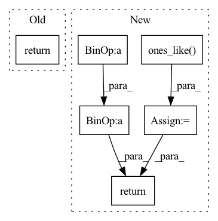

Pattern ID :430
Before Change
loss_conf = torch.mean(self.BCELoss(conf, tobj))
loss += loss_conf * self.balance[l] * self.obj_ratio
return loss
def get_near_points(self, x, y, i, j):
sub_x = x - iAfter Change
// 表示真实框的宽高，二者均在0-1之间
// 真实框越大，比重越小，小框的比重更大。
//-----------------------------------------------------------//
box_loss_scale = 2 - box_loss_scale
//---------------------------------------------------------------//
// 计算预测结果和真实结果的giou
//----------------------------------------------------------------//
giou = self.box_giou(pred_boxes[y_true[..., 4] == 1], y_true[..., :4][y_true[..., 4] == 1])
loss_loc = torch.sum((1 - giou) * box_loss_scale[y_true[..., 4] == 1])
//-----------------------------------------------------------//
// 计算置信度的loss
//-----------------------------------------------------------//
loss_conf = torch.sum(self.BCELoss(conf[y_true[..., 4] == 1], giou.detach().clamp(0))) + \
torch.sum(self.BCELoss(conf, y_true[..., 4]) * noobj_mask)
loss_cls = torch.sum(self.BCELoss(pred_cls[y_true[..., 4] == 1], self.smooth_labels(y_true[..., 5:][y_true[..., 4] == 1], self.label_smoothing, self.num_classes)))
loss = loss_loc * self.box_ratio + loss_conf * self.balance[l] * self.obj_ratio + loss_cls * self.cls_ratio
num_pos = torch.sum(y_true[..., 4])
num_pos = torch.max(num_pos, torch.ones_like( num_pos) )
return loss, num_pos
def get_near_points(self, x, y, i, j):
sub_x = x - iIn pattern: SUPERPATTERN
Frequency: 3
Non-data size: 6
Instances Fragment ID: 1600025
Project Name: bubbliiiing/yolov5-pytorch
Commit Name: d49e041b6f4ef50c5d94ce88d33d147f3227bc77
Time: 2022-01-15
Author: 47347516+bubbliiiing@users.noreply.github.com
File Name: nets/yolo_training.py
M Class Name: YOLOLoss
N Class Name: YOLOLoss
M Method Name: forward(4)
N Method Name: forward(4)
M Parent Class: nn.Module
N Parent Class: nn.Module
M File Name: nets/yolo_training.py
N File Name: nets/yolo_training.py
M Start Line: 158
M End Line: 198
N Start Line: 156
N End Line: 200
Before Change
pred = pred * mask
target = target * mask
a = torch.sum(pred * target)
b = torch.sum(pred)
c = torch.sum(target)
d = (2 * a) / (b + c + self.eps)
return 1 - d
After Change
assert pred.size() == gt.size() and gt.numel() > 0
if mask is None:
mask = torch.ones_like( gt)
assert mask.size() == gt.size()
pred = pred.contiguous().view(pred.size(0), -1)
gt = gt.contiguous().view(gt.size(0), -1)
mask = mask.contiguous().view(mask.size(0), -1)
pred = pred * mask
gt = gt * mask
dice_coeff = (2 * (pred * gt).sum()) / (
pred.sum() + gt.sum() + self.eps)
return 1 - dice_coeff
@MODELS.register_module() Fragment ID: 1599994
Project Name: open-mmlab/mmocr
Commit Name: 1cbc42eceb40334c56474b979b1ac5be0065280a
Time: 2022-07-20
Author: gaotongxiao@gmail.com
File Name: mmocr/models/common/losses/dice_loss.py
M Class Name: DiceLoss
N Class Name: MaskedDiceLoss
M Method Name: forward(4)
N Method Name: forward(4)
M Parent Class: nn.Module
N Parent Class: nn.Module
M File Name: mmocr/models/common/losses/dice_loss.py
N File Name: mmocr/models/common/losses/dice_loss.py
M Start Line: 16
M End Line: 31
N Start Line: 25
N End Line: 58
Before Change
mel_loss + duration_loss + pitch_loss + energy_loss
)
return (
total_loss,
mel_loss,
pitch_loss,
After Change
D_s_loss = D_t_loss = torch.tensor([0.], device=mel_predictions.device, requires_grad=False)
if D_s is not None and D_t is not None:
D_s_loss = self.mse_loss(D_s, torch.ones_like(D_s, requires_grad=False))
D_t_loss = self.mse_loss(D_t, torch.ones_like( D_t, requires_grad=False) )
alpha = self.alpha
recon_loss = alpha * (mel_loss + duration_loss + pitch_loss + energy_loss)
total_loss = (
recon_loss + D_s_loss + D_t_loss
)
return (
total_loss,
mel_loss,
pitch_loss,
Fragment ID: 1600000
Project Name: keonlee9420/stylespeech
Commit Name: b18d6280abb4063fdeab58238ec574166dd405f0
Time: 2021-06-13
Author: keonlee9420@gmail.com
File Name: model/loss.py
M Class Name: StyleSpeechLoss
N Class Name: MetaStyleSpeechLossMain
M Method Name: forward(3)
N Method Name: forward(3)
M Parent Class: nn.Module
N Parent Class: nn.Module
M File Name: model/loss.py
N File Name: model/loss.py
M Start Line: 75
M End Line: 91
N Start Line: 78
N End Line: 104